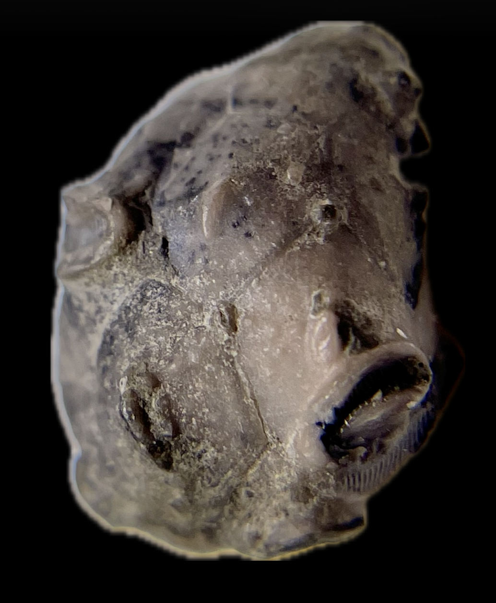
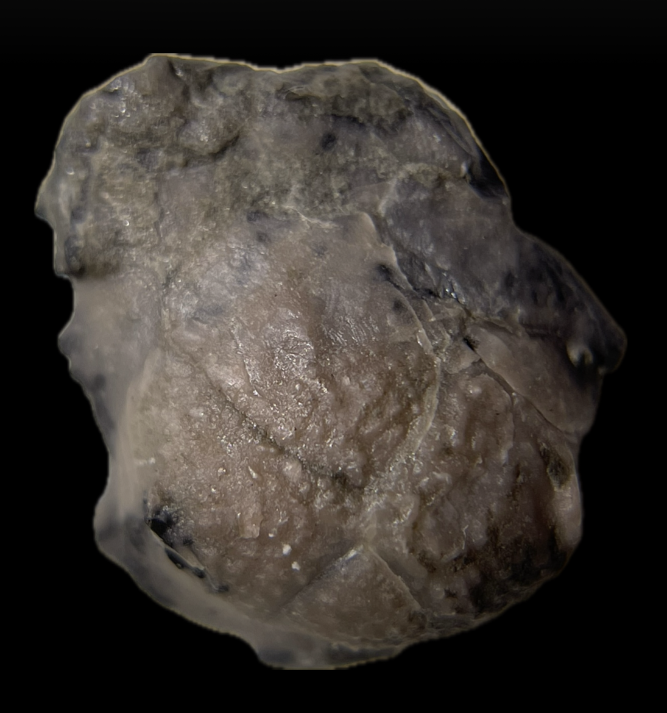
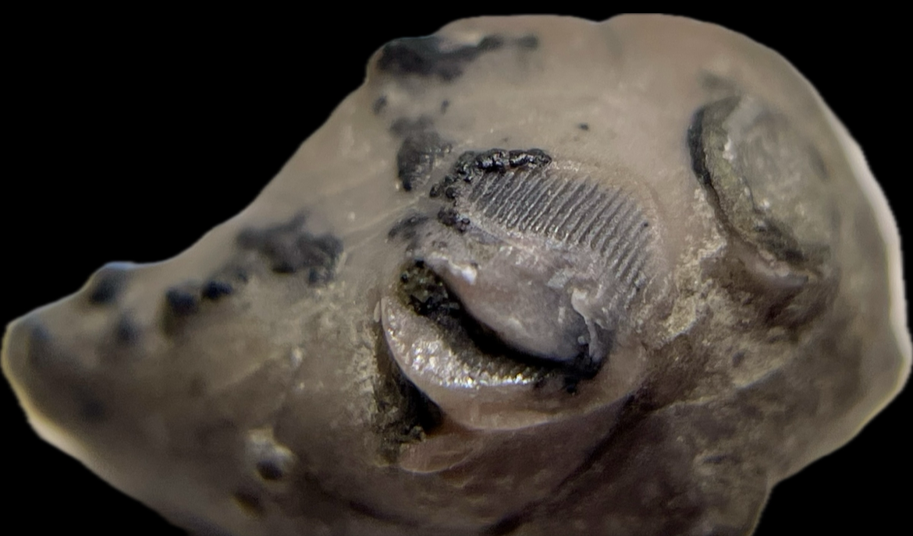
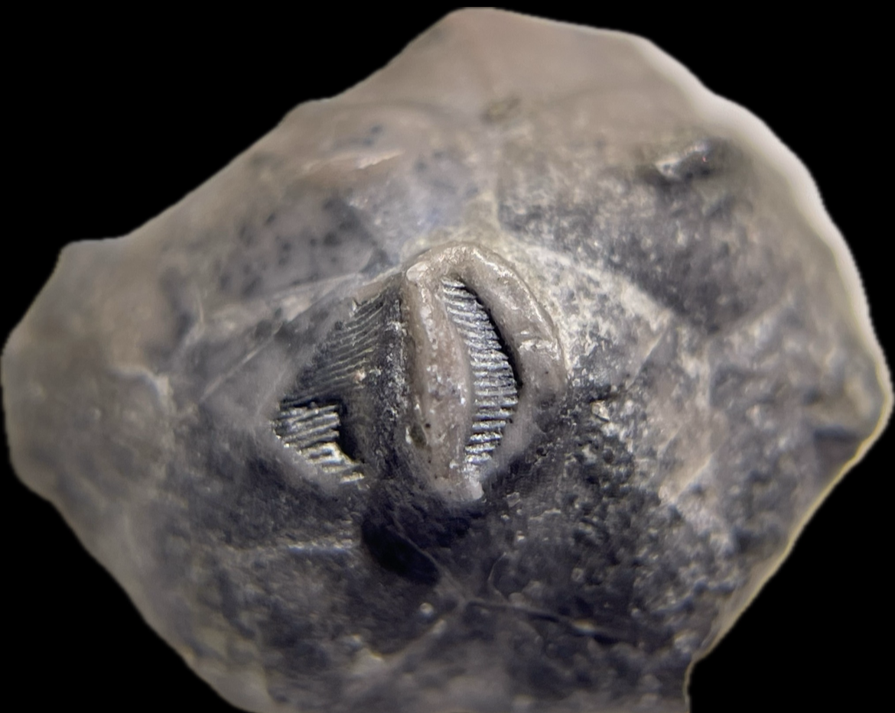

Cystoid
Schizocystis armata
• Silurian
• Coalbrookdale Formation (Wenlock Shale)
• Whitman's Hill Quarry, Malvern, Worcestershire, UK
Size: 1.5 cm
Schizocystis is a highly-unusual rhombiferan cystoid that is believed to have been eleutherozoic (i.e. free-living), probably using its stem for mobility as opposed to stably anchoring to a substrate. It also probably rested on its side in life as suggested by its bizarrely-asymmetric theca: one side is flat and featureless without pores, which is likely the side it laid on (Broadhead & Strimple 1978). Along with this adaptation, it possesses only two pairs of crescent-shaped respiratory pore rhombs instead of the typical three.
|

|